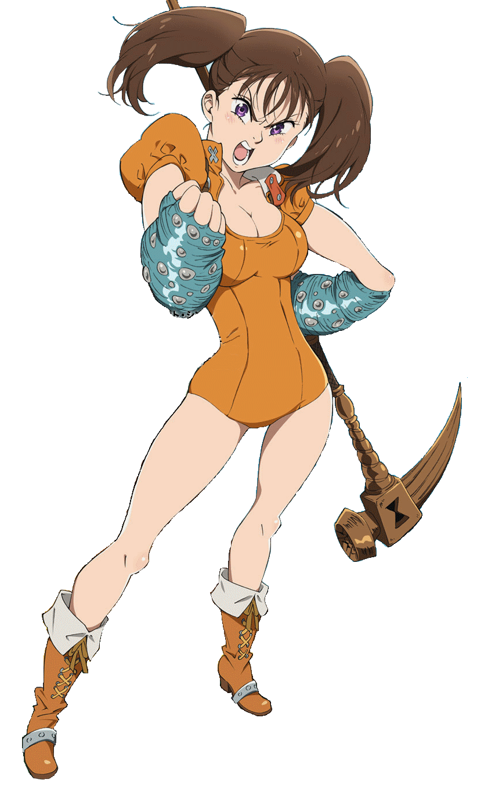

Diane é um membro dos Sete Pecados Capitais e é conhecida como o Pecado da Inveja da Serpente. Ela é um membro do Clã dos Gigantes, e é muito maior do que as pessoas comuns, incluindo seus companheiros dos Sete Pecados Capitais. Seu Tesouro Sagrado é o Martelo da Guerra Gideon, que ela usa em conjunto com o seu poder, Creation.